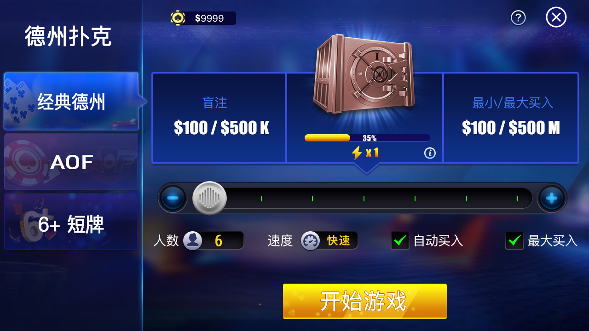
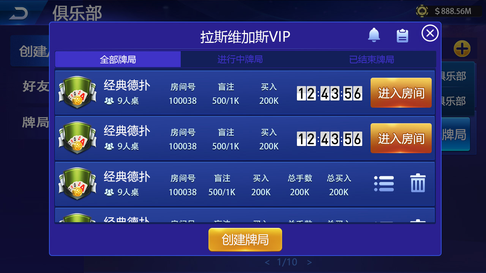

比赛与房间处理
MatchServer、MatchServant、Processor 与 TimerThread 组成主要服务端入口。
Public Scope
仓库包含 Match/Order 服务端、Tars 接口、牌局生命周期、公共逻辑和 Unity 元数据；但公开目录没有 Unity Assets、完整数据库迁移、自动化测试或经验证的一键部署环境。
Repository Components
MatchServer、MatchServant、Processor 与 TimerThread 组成主要服务端入口。
OrderServer 与 Tars 接口提供订单相关服务框架，部署前需审计幂等和结算。
覆盖牌局开始、动作、发牌、计算、结束和消息处理相关文件。
协议文件用于服务调用和消息交换，仍需补充版本与兼容策略。
common、core 和 config 目录承载公共实现与配置相关代码。
包含 Packages 和 ProjectSettings；缺少 Assets 时不能构建完整客户端。
Server Flow
真实部署需要补充网关、鉴权、持久化、监控、备份、测试和安全控制。
连接、鉴权与限流。
请求与消息协议。
房间、匹配与牌局。
超时、结果和幂等。
数据库、日志与运营服务。
Product Screenshots


